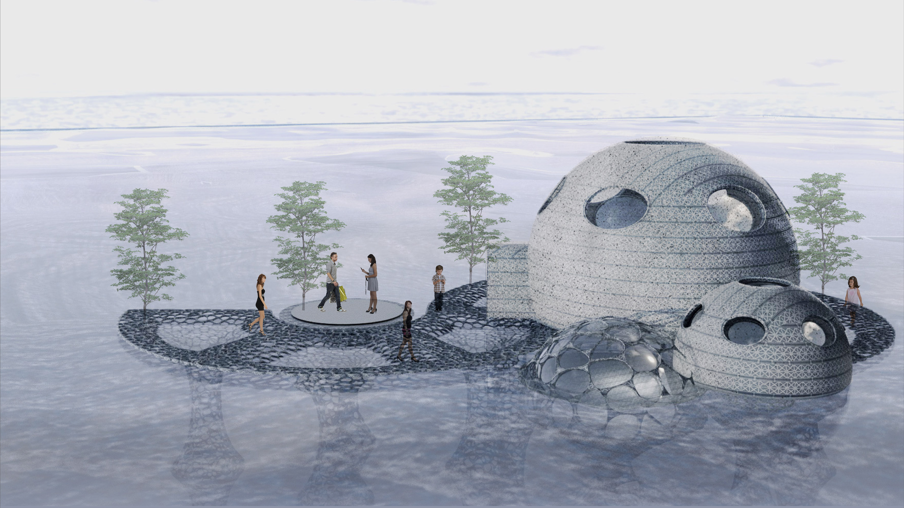
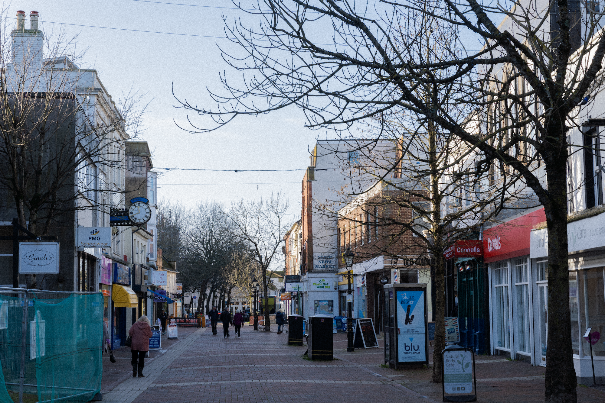
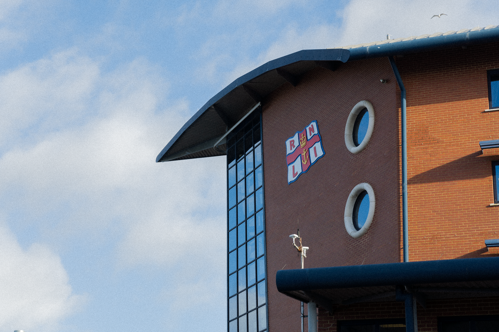
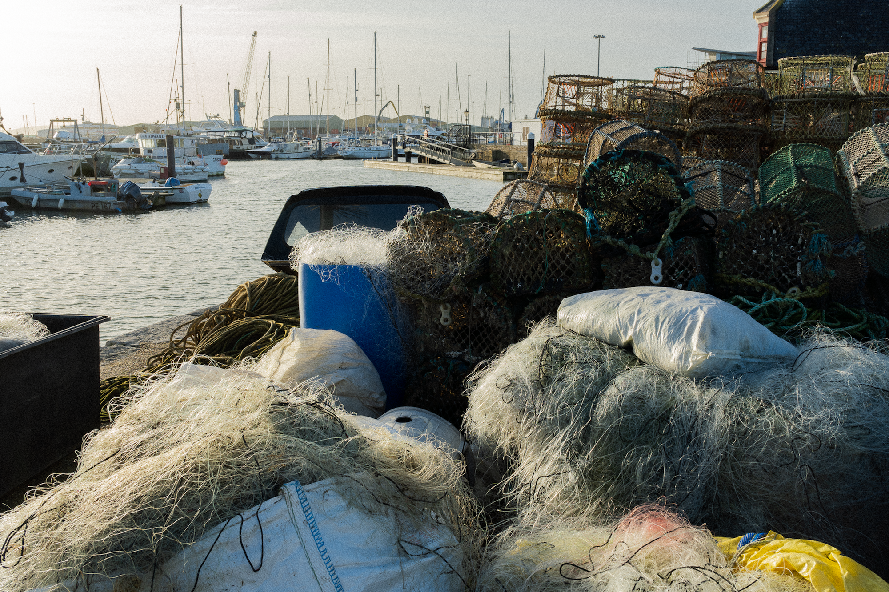
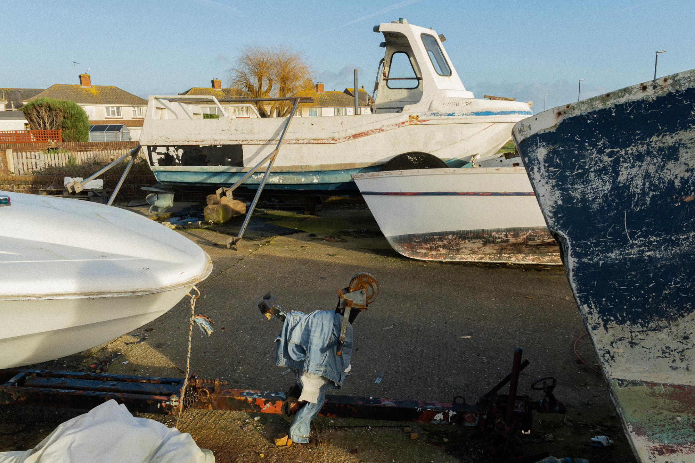
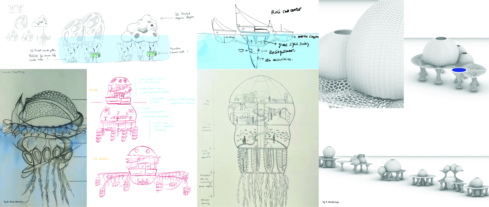
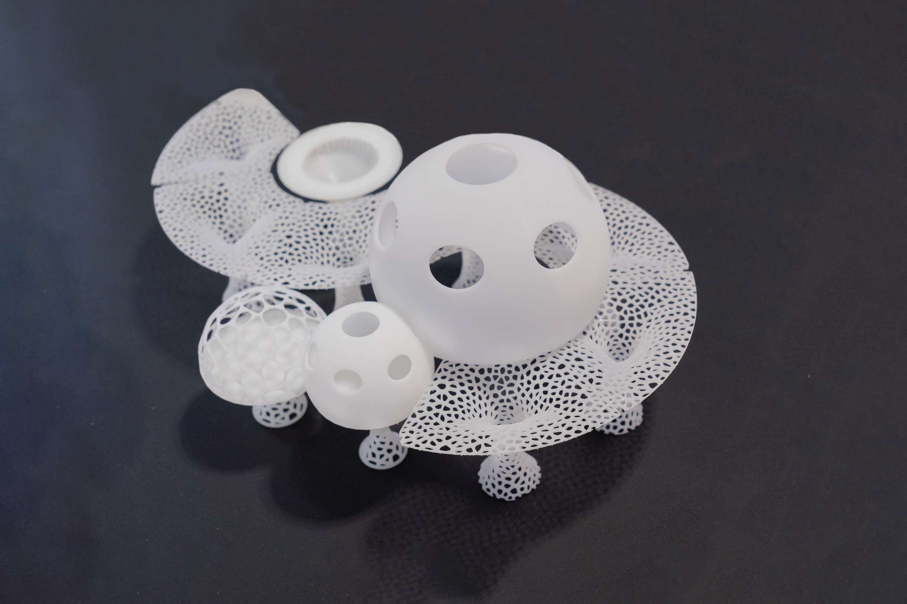
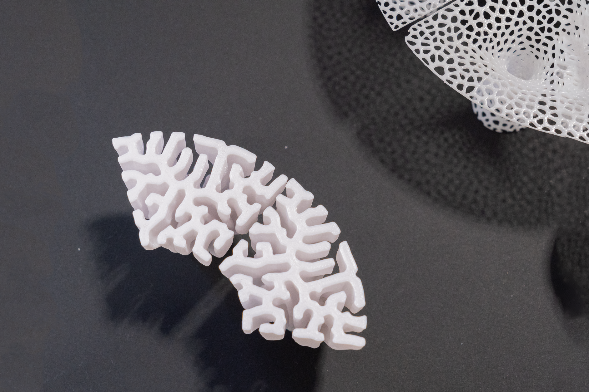
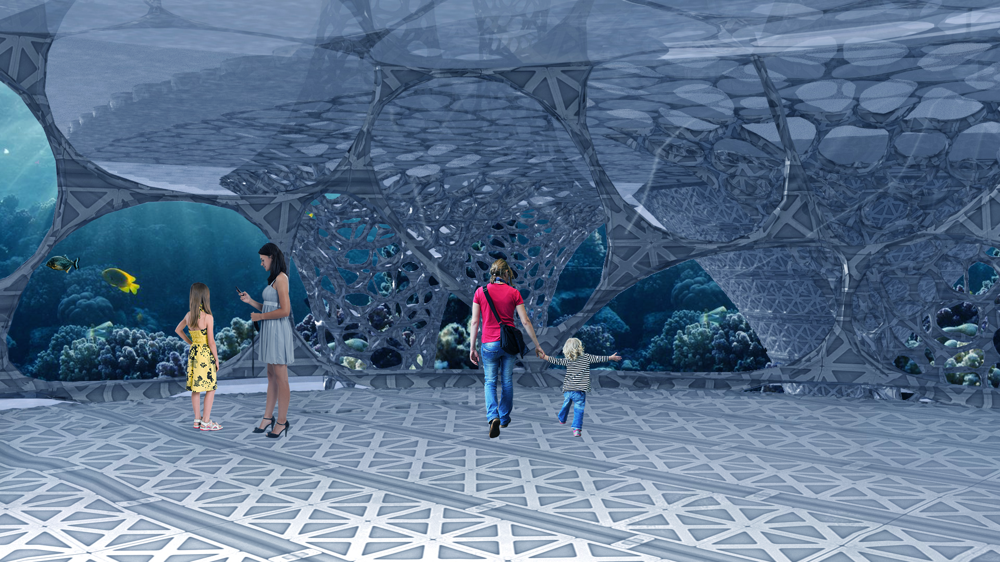
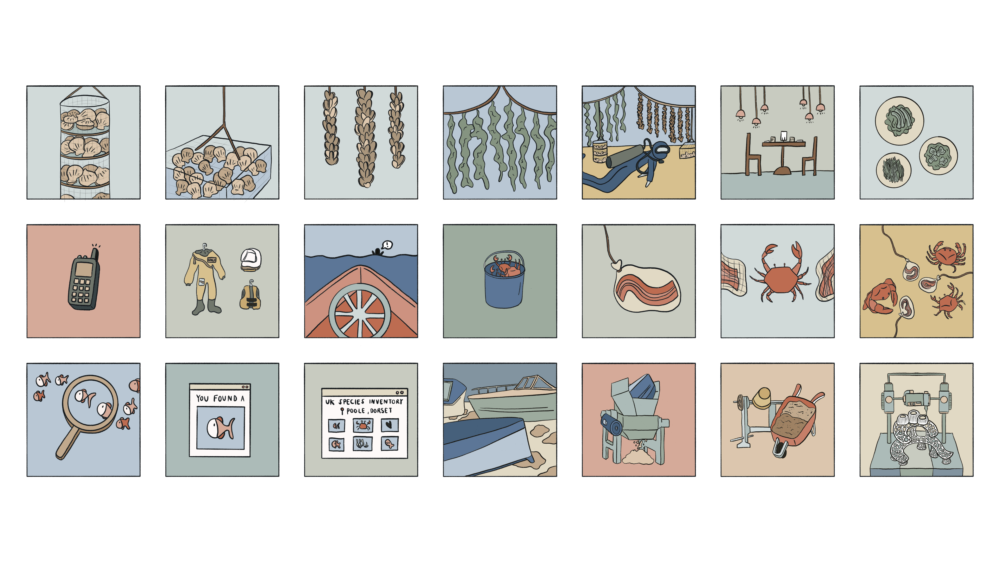

An interactive space on the coastline of Poole, upcycled from abandoned boats, for visitors to experience the local marine environment. Poole Pavilion aims to provide a glimpse into what the future of coastal cities could look like — balancing human activity, ecological restoration, and community connection.

Poole is a coastal town with a deeply seasonal economy, a strong maritime heritage, and an escalating problem: boat graveyards. Derelict vessels accumulate on the shoreline, promoting littering and eroding community pride — while fiberglass, one of the hardest materials to recycle, leaches into the surrounding marine environment.
Poole Pavilion proposes a future where abandoned boats become the raw material for a new coastal civic space — regenerating both the shoreline and the community that depends on it.




Research included desk study, an interview with RNLI employees, and a site visit to Poole. Four tensions shaped the brief:
Visible debris normalizes neglect — the presence of derelict boats signals that the space isn't cared for.
Community matters but tensions exist between longtime residents and newer arrivals, and between younger and older generations.
Poole has established sustainability commitments and a deeply felt connection to the sea — any intervention must honor this.
Off-season closures hurt local businesses and residents. Year-round programming would stabilize the community.

Initial sketches
The pavilion structure repurposes derelict boat fiberglass through a conversion process comparable to wind turbine recycling. The resulting fiber-reinforced concrete — ideal for artificial reefs — is 3D-printed into a marine-friendly structure that supports wildlife interaction while sitting on the water.



Inside, three interconnected programs serve different community needs year-round:

Year-round programming: aquaculture, community games, and marine education.
Poole Pavilion was shortlisted in the top 12 of 97 teams in the Royal College of Art's Grand Challenge and exhibited at the RCA's Grand Challenge Exhibition in March 2023.
The project addresses all three UN sustainability pillars — environmental, economic, and social — by celebrating Poole's maritime history, connecting generations through shared programming, expanding marine research infrastructure, and demonstrating how coastal cities might balance human and marine coexistence respectfully.